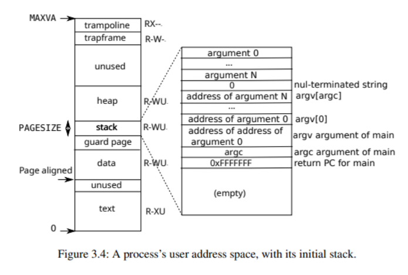

存储管理
全局分配器
为了在内核中能够使用 String, Vec 等动态内存分配的容器，需要实现 global_allocator，为此我们直接使用的现有的 buddy_system_allocator 来实现。
#![allow(unused)] fn main() { #[global_allocator] static HEAP_ALLOCATOR: LockedHeap = LockedHeap::empty(); }
物理页分配
我们对空闲页面的管理方式和 xv6 相同，即链式管理。由于链表的所有结点信息都存储在空闲页面里面，所以这种管理方式的优点就是没有额外的内存开销。
在内核初始化时，会扫描所有的空闲物理页面，然后组成一个空闲页面链表。
#![allow(unused)] fn main() { struct Kmem { lock: Spinlock, freelist: *mut Run, } pub fn kinit() { KMEM.get_mut().freerange(ekernel as Addr, PHYSTOP); // println!("kinit success!"); } fn freerange(&mut self, pa_start: Addr, pa_end: Addr) { let mut pa = pgroundup(pa_start); while pa < pa_end - PGSIZE { self.kfree(pa); pa += PGSIZE; } } }
kalloc() 会从单向空闲页面链表的表头，找到一个可用的空闲页面，如果找到就返回这个地址，否则就会返回一个空指针。
kfree() 会回收一个地址为 pa 的物理页面。
#![allow(unused)] fn main() { fn kfree(&mut self, pa: Addr) { if pa % PGSIZE != 0 || pa < ekernel as Addr || pa >= PHYSTOP { panic!("kfree"); } // 填充垃圾数据避免垂悬引用 memset(pa as *mut u8, 1, PGSIZE); let pa = pa as *mut Run; self.lock.acquire(); unsafe { (*pa).next = self.freelist } self.freelist = pa; self.lock.release(); } fn kalloc(&mut self) -> Addr { let mut r: *mut Run = null_mut(); self.lock.acquire(); r = self.freelist; if r != null_mut() { unsafe { self.freelist = (*r).next } } self.lock.release(); if r != null_mut() { memset(r as *mut u8, 5, PGSIZE); } r as Addr } }
当然目前的这种单向链表管理方式也存在一些问题：
- 没必要在初始化时扫描所有内存，而仅需额外增加一个变量 next 表示下次分配的物理页面的地址，在释放页面时才逐步地建立起来空闲页面链表。
- 单向空闲页面链表会存在部分页面频繁使用，而部分页面几乎从不使用的情况，可以使用双向链表改进。
后续会对上述存在的问题进行改进。
虚拟存储
我们虚拟存储的实现基本与 xv6 保持一致。
对于内核地址空间，我们采用恒等映射的方式。

对于用户地址空间，我们将其映射到地址 0x0 处。

内核栈与用户栈
在实际运行测试过程发现一个页面大小的堆栈无法满足正常需求，有时在内核启动过程中会出现爆栈的情况，所以我们统一将内核的堆栈大小设置为 16 个页面，也就是 64K，而用户的堆栈大小设置为 4个页面，即 4K。
#![allow(unused)] fn main() { pub const KERNEL_STACK_SIZE: usize = 16 * PGSIZE; pub const USER_STACK_SIZE: usize = 4 * PGSIZE; }